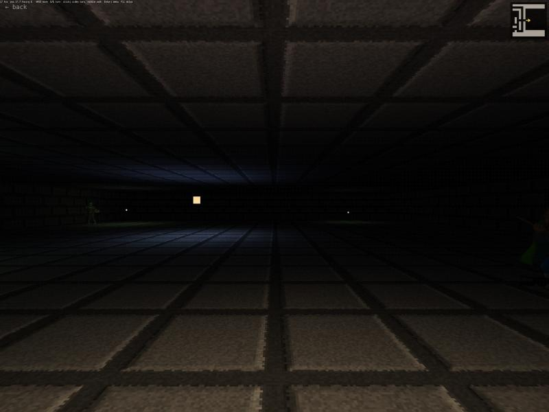

Blobber
Completion ▰▱▱▱▱▱▱▱▱▱ 10% · engine concept
Blobber is the engine for a party-based dungeon crawler in the Eye of the Beholder / Legend of Grimrock tradition, where you move one cell at a time and turn in 90° steps. There is no 3D pipeline. Every wall, floor and ceiling is a flat quad that the code transforms by hand, near-clips, projects and paints far to near with Ebitengine's 2D triangle API. Depth sorting is just the order the cells are visited.
The wall textures do not exist as files. At startup a small heightmap of stone blocks is baked into a lit texture, with the light direction chosen per wall orientation, so a side-facing wall has its grooves shaded as if seen from the corridor. A "bump" slider in the settings re-bakes them live. Darkness is an ordered 4×4 Bayer dither with eight brightness levels in a shader, so the far end of a corridor fades into retro noise rather than a smooth gradient.
What exists so far is one hand-written map with wandering monsters as lit billboards, grass tufts, lanterns and fireflies, a minimap, smooth movement with head sway and a settings menu. No party, no combat, no items yet.
Controls: WASD or arrows to step and strafe, Q / E to turn, Enter for the settings menu, F1 for the texture atlas. On touch or with the mouse: tap the middle to walk, the sides to turn.
Features
- First-person grid movement, pure 2D: hand-transformed quads, perspective-correct texturing in a shader
- Textures baked from a heightmap at startup, lit per wall orientation, bump adjustable at runtime
- Visibility by DDA rays across the frustum: frustum and occlusion culling in one loop
- Per-vertex torch light, Bayer-dithered darkness with eight levels
- Billboard monsters that wander, animated grass, lanterns and fireflies
- Smooth stepping with sway, queued input, continuous movement on held keys
- Minimap and a settings menu (dither, smoothing, torch, bump, fullscreen)
Under the hood
The whole renderer rests on one idea: a quad goes in as four world-space vertices and comes out as screen triangles (blobber.go):
// drawQuad subdivides, lights, transforms, near-clips and projects one textured quad.
func (g *Game) drawQuad(dst *ebiten.Image, c cam, f *face) {Is it a real game?
Engine concept. Written in a weekend in October 2026. You can walk around one dungeon and look at monsters, and it runs in the browser. Everything that makes it an RPG is still missing.
Screenshots

Latest updates
- 2026-10-04 Split into a reusable blobber package and a demo
- 2026-10-04 Single-file blobber engine